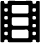
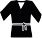
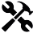

2019 : ADRAR Formation Montpellier / Préparation du Titre Professionnel de Développeur Front-End & Web Designer. Méthode Agile, Titre professionnel de niveau 3.
2002 : Diplôme d’Etat de Manipulateur en Électroradiologie Médicale.
Anglais courant
Allemand notions



Récemment converti aux métiers du numérique, je suis actuellement en
formation de Web Designer à ADRAR Formation Montpellier.
Manipulateur en radiologie par le passé et formateur référent au sein d'un groupe de plusieurs techniciens, je propose de mettre ces compétences au service de la créativité d’un groupe.
Je recherche un stage en entreprise, en Développement Front End et Web Design.
J’aime collaborer sur des projets innovants et me donner les moyens d'atteindre les objectifs.
Apprendre à travailler dans une configuration totalement différente, avec de nouvelles normes, sera toujours un challenge intéressant.
Transformer le stress d'une situation en efficacité, peut être dans certains cas une source de créativité supplémentaire.
Manipulateur en Radiologie
2018 - 2019 : Clinique de La Source à Lausanne (CH).
Réalisation d’examens Scanner, Interventionnel, IRM, Radios.
Travail en collaboration avec un groupe de 30 techniciens.
Perfectionnement sur des gestes techniques Interventionnels.
Manipulateur en Radiologie
2015 - 2017 : Clinique de Genolier (CH).
Réalisation d’examens Scanner, Interventionnel, IRM, Radios.
Clientèle exclusivement étrangère.
Pratique d’un anglais médical technique.
Gestion des stock de matériel.
Former tous les techniciens aux gestes interventionnels au scanner.
Manipulateur en Radiologie
2014 - 2015 : Centre d’Imagerie d’Epalinges (CH).
Réalisation d’examens Scanner, Interventionnel, IRM, Radios.
S’adapter à de nouvelles normes de travail.
Manipulateur en Radiologie
2002 - 2014 : Clinique du Millénaire Montpellier.
Réalisation d’examens Scanner et Radios.
Création du service de radiologie.
Réalisation efficace des examens.
Labellisation et protocolisation du travail.